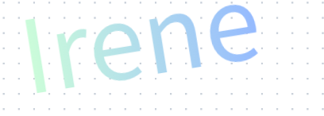
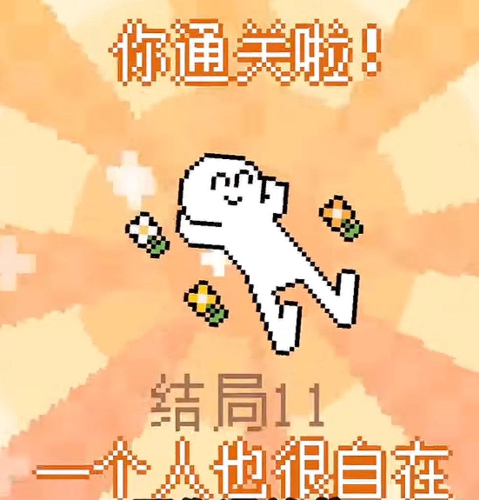
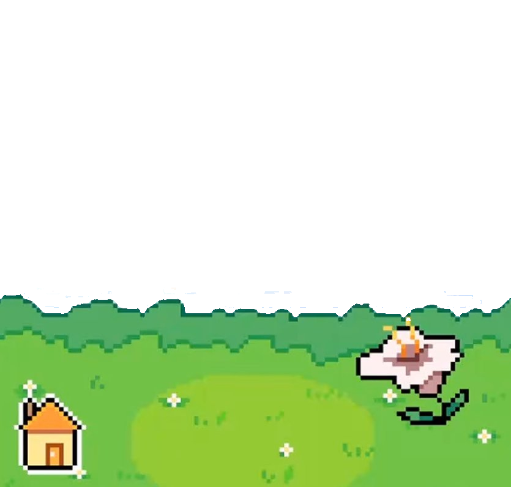

PRESENTS
點擊任意處或按空白鍵略過
于凱
有照顧小家庭嗎？
要領養一只
電子小鯊魚嗎？
好的
不要
太棒了！小鯊魚很開心！✨

重新開始
PROJECT
妹妹 1108
開始遊戲
▶
讀取存檔
系統設定
切換語言 (Language)
重播開場 Logo
🔊 聲音
🌿 外出
你好！
給它吃蘋果吧
+
✦
+

🏠 回家
🎙️ 作者專屬原聲配音
✕
①「你好！」
已錄製 ✓
②「我想吃蘋果」
已錄製 ✓
③「對對就是那個」
已錄製 ✓
④「可以給我嗎？」
待錄製 🎙️
現在錄製第四句（緊接著第三句後）：用自己的聲音說「
可以給我嗎？
」！
🔴 開始錄音
▶ 試聽
💾 保存為正式版語音
點擊「開始錄音」後，請清晰說出：「可以給我嗎？」
或上傳現有音檔為此句語音 (MP3/WAV/M4A)：